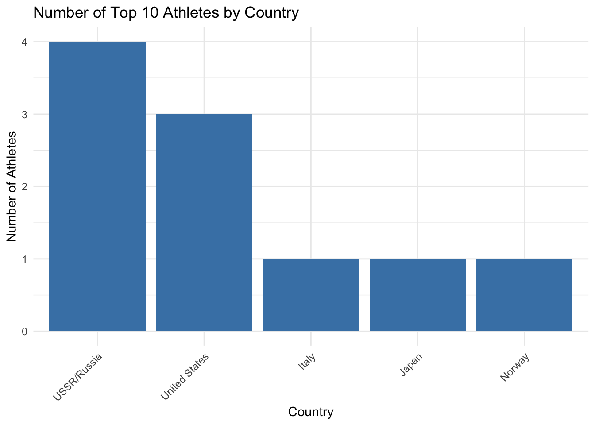

tuesdata <- tidytuesdayR::tt_load('2024-08-06')
olympics <- tuesdata$olympicsSuccess in Olympics
Nations that Produced the Most Talented Athletes
Successful Countries and Athletes in the Olympics
Objective: Usually it is the Olympic athletes that receive the fame. However, at the end of the day they each represent their country with pride. Let’s find out which nations are represented the most in the top 10 most successful athlete list (measured by medal count). So, which countries have produced the best talents?
This analysis utilizes a public dataset on Kaggle compiled by RGriffen. This is a historical dataset on the modern Olympic Games, including all the Games from Athens 1896 to Rio 2016. It was compiled from scrapping data from Sport Reference on May 2018.
Original Data
library(DT)
# Display the first 5 rows as an interactive table
datatable(
olympics[1:5, ], # Select the first 5 rows
options = list(
pageLength = 5, # Show 5 rows
scrollX = TRUE, # Enable horizontal scrolling
dom = 't', # Show only the table (no search box, etc.)
autoWidth = TRUE # Adjust column width automatically
),
caption = "First 5 Rows of the Olympics Dataset"
)Above is a sample table showing the first 5 rows of Olympics dataset. This data includes all athletes who participated in past Olympics. Team represents the country each athlete represented and the variable “noc” represents the three-letter abbreviation. Some columns do have missing variable. For example, some athletes may have missing data on their height and weight. If the medal column is missing, it means that the player did not win a medal during his/her participation of that particular event. If a player did win a medal, it will be indicated as Bronze, Silver or Gold.
library(tidyverse)
library(knitr)
library(kableExtra)
# Treating Soviet Union and Russia as one country and representing it as USSR/Russia
olympics <- olympics |>
mutate(team = case_when(
team %in% c("Soviet Union", "Russia") ~ "USSR/Russia",
TRUE ~ team
))
#Obtaining best athletes
top_athletes <- olympics |>
filter(!is.na(medal)) |> # first filters for those only with medals
group_by(name, team) |>
summarise(total_medals = n(), .groups = "drop") |>
arrange(desc(total_medals)) |>
slice(1:10)
# Create a clean table for Top 10 Athletes
top_athletes |>
kable(
caption = "Top 10 Athletes by Total Medals (USSR/Russia Combined)",
col.names = c("Name", "Team", "Total Medals"),
align = "lcl"
) |>
kable_styling(
bootstrap_options = c("striped", "hover", "condensed"),
full_width = FALSE
)| Name | Team | Total Medals |
|---|---|---|
| Michael Fred Phelps, II | United States | 28 |
| Larysa Semenivna Latynina (Diriy-) | USSR/Russia | 18 |
| Nikolay Yefimovich Andrianov | USSR/Russia | 15 |
| Borys Anfiyanovych Shakhlin | USSR/Russia | 13 |
| Edoardo Mangiarotti | Italy | 13 |
| Ole Einar Bjrndalen | Norway | 13 |
| Takashi Ono | Japan | 13 |
| Aleksey Yuryevich Nemov | USSR/Russia | 12 |
| Dara Grace Torres (-Hoffman, -Minas) | United States | 12 |
| Jennifer Elisabeth "Jenny" Thompson (-Cumpelik) | United States | 12 |
# Filter by nations for the top athletes
top_nations <- top_athletes |>
group_by(team) |>
summarise(count = n(), .groups = "drop") |>
arrange(desc(count))
# Create clean table for Top Nations
top_nations |>
kable(
caption = "Top Nations by Number of Top Athletes (USSR/Russia Combined)",
col.names = c("Team", "Number of Athletes"),
align = "lc"
) |>
kable_styling(
bootstrap_options = c("striped", "hover", "condensed"),
full_width = FALSE
)| Team | Number of Athletes |
|---|---|
| USSR/Russia | 4 |
| United States | 3 |
| Italy | 1 |
| Japan | 1 |
| Norway | 1 |
As for most successful athletes, Michael Phelps by far has won the most medals (28). His success if unprecedented, with the second most decorated athlete having a whopping 10 fewer medals than Phelps.
library(ggplot2)
# Creating a bar chart
ggplot(top_nations, aes(x = reorder(team, -count), y = count)) +
geom_bar(stat = "identity", fill = "steelblue") +
labs(title = "Number of Top 10 Athletes by Country",
x = "Country",
y = "Number of Athletes") +
theme_minimal() +
theme(axis.text.x = element_text(angle = 45, hjust = 1))
Russia (formerly USSR) produced the highest number of most successful athletes. Russia/USSR and the US usually rank top 2 for medal counts. It is actually surprising to find China not represented in the list, given the recent success of China in Olympics.